Prepare. Launch. Reload.
Stock your facilities with drones and missiles, then launch salvos at targets across the map.
- Drone Facility
- Ballistic Missile Facility
Volunteer voice acting: roles open. View roles
EA has not endorsed and does not support this product.
The fourth faction / Iran
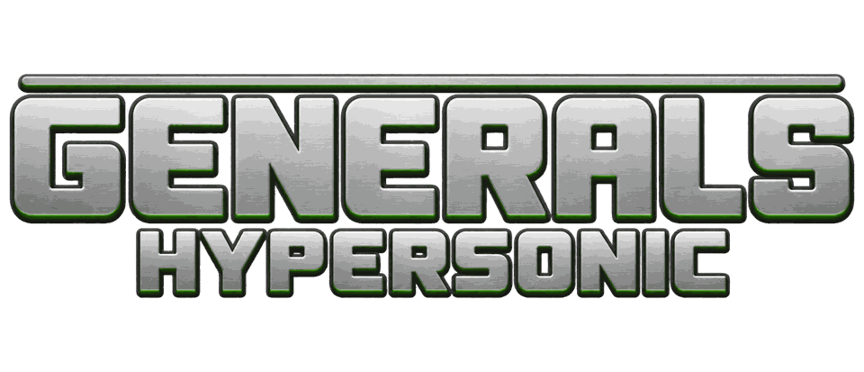
A free fan mod for Command & Conquer: Generals – Zero Hour. Iran joins as a fourth faction, with strike drones and ballistic missiles.
In Hypersonic, Iran strikes from range with ballistic missiles and drones, and defends its airspace with surface-to-air missiles.
Stock your facilities with drones and missiles, then launch salvos at targets across the map.
Ballistic missiles from the Fateh-110 to the hypersonic Fattah. Enemy air defenses can intercept them, so speed and salvos matter.
Superweapon Khorramshahr: one missile, ten warheads.
Pick a point on the map and the strike drones head there on their own. Cheap and expendable, so send several.
Tanks and rocket artillery finish what the missiles and drones start.
SAM sites and mobile launchers shoot down aircraft and missiles. Anti-tank bunkers stop armored attacks.
Closed alphav1.0.0-alpha.1Windows PC
This alpha is available by invitation only. Invited testers receive access instructions.
There is no public download or tester sign-up form on this site yet. The public download will be posted here when it is ready.
Skirmish vs AI and multiplayer. The Android build is experimental.
HypersonicZH.exe from the portable folder.Installation guide (.txt)Release notes and known issues (.txt)
This release is unsigned, so Windows SmartScreen may warn that it is unrecognised. Choose More info, then Run anyway. Smart App Control can still block it. About Windows security warnings
This alpha includes skirmish against the AI and multiplayer. Expect bugs, unfinished art and balance changes. Multiplayer requires everyone to use the same mod and engine build. Campaign missions and Generals Challenge are not included.
Extract the ZIP into its own folder, outside your Zero Hour folder, and run HypersonicZH.exe. If the game is not found, follow the portable setup instructions.
Checksums will accompany the release packages.
Steam: Steam copies of Zero Hour work. The installer finds Zero Hour in your Steam library, also on other drives. If it does not, select the folder that contains game.dat and INIZH.big.
Screen resolution: in the game open Options, pick your screen size under Resolution (for example 1920×1080) and choose Accept. Or, with the game closed, edit Documents\Generals Hypersonic Data\Options.ini and set a line like Resolution = 1280 720. If the game runs slowly, use a smaller resolution and set Detail to Low.
Camera: The camera zooms out much further than in Zero Hour (height 550 instead of 310), so you can follow missiles and drones across the map.
Custom maps: Skirmish maps in your normal Zero Hour maps folder (Documents\Command and Conquer Generals Zero Hour Data\Maps) appear in the map list automatically, and the Iran AI plays on them too.
Installer: run the new setup. It installs over the old version and removes files the new version no longer uses; there is no need to uninstall first. Close the game before you start.
Portable ZIP: delete the old mod folder (never your Zero Hour folder) and extract the new ZIP in its place.
Saved games and replays from an older version do not work in a new version, and online or LAN games need the same version for every player. Your options are kept.
Include your mod version, the steps to reproduce the problem, what happened and what you expected. Add the map, factions and AI difficulty, if they apply. Attach a replay if you have one and, after a crash, ReleaseCrashInfo.txt from Documents\Generals Hypersonic Data.
Use the template to prepare your report. A submission link is not available on this site yet.
Casting call
Volunteer voice acting for the mod: 15 unit roles in Persian and one Announcer in English. A phone in a quiet room is enough, and every volunteer is credited in the game and on this site.
فراخوان صداگذاری
صدای یونیتهای ایران شوید
صداگذاری داوطلبانه برای ماد: ۱۵ نقش یونیت به فارسی و یک نقش گوینده به انگلیسی. یک گوشی در اتاقی ساکت کافی است و نام همهی داوطلبان در تیتراژ بازی و روی همین سایت میآید.
Choose a role
Read its lines on Telegram. They are suggestions: change them or improvise.
یک نقش انتخاب کنید
جملههایش را در تلگرام بخوانید. جملهها فقط پیشنهادند؛ میتوانید تغییرشان دهید.
Message @mswi_2004
Say which role you want and wait for the reply that it is yours.
به @mswi_2004 پیام بدهید
بگویید کدام نقش را میخواهید و منتظر تأیید بمانید.
Record on your phone
Once the role is yours: in a quiet room, hold the phone about 20 cm from your mouth and say each line 2–3 times. Telegram voice messages are fine.
با گوشی ضبط کنید
پس از تأیید نقش، در اتاقی ساکت گوشی را حدود ۲۰ سانتیمتر از دهانتان نگه دارید و هر جمله را ۲ تا ۳ بار بگویید. پیام صوتی تلگرام هم قبول است.
See which roles are open in the role list on Telegram.
Open the channelNo Telegram? Email us for the lines and to request a role.
تلگرام ندارید؟ برای گرفتن متن جملهها و درخواست نقش ایمیل بزنید.
The one English role تنها نقش انگلیسی
گوینده
The calm, clear voice of the command post: power, money, attacks and superweapons. Recorded in English; an Iranian accent is welcome. A large role, best for someone with the time to record 43 lines.
صدای آرام و واضح اتاق عملیات. به انگلیسی ضبط میشود و از لهجهی ایرانی استقبال میکنیم. نقش بزرگی است: ۴۳ جمله.
43 lines · EnglishLines · جملهها
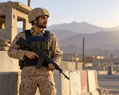
سرباز سپاه / پاسدار
Disciplined professional rifleman, steady faith, clear voice.
تفنگدار حرفهای و منضبط؛ باایمان، با صدایی آرام و واضح
پاسدار، آمادهی خدمت.
14 lines · ۱۴ جملهLines · جملهها
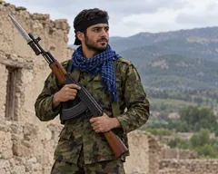
بسیجی
Young volunteer: fervent, eager, rough street voice.
نیروی داوطلب جوان؛ پرشور، مشتاق، کمی خشن
بسیجی آمادهست، بگو کجا!
16 lines · ۱۶ جملهLines · جملهها
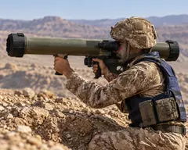
تیم ضدزره
Anti-tank team: calm, precise tank hunters.
تیم ضدتانک؛ آرام، دقیق، متمرکز
شکارچی تانک، به گوشم.
9 lines · ۹ جملهLines · جملهها
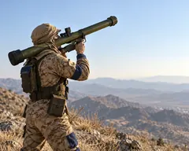
پدافند دوشپرتاب میثاق
Air-defense soldier: alert, eyes on the sky.
سرباز پدافند هوایی؛ هوشیار، چشمش به آسمان
چشمم به آسمونه.
8 lines · ۸ جملهLines · جملهها
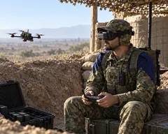
اپراتور پهپاد
Technician: quiet, cool, a little nerdy.
تکنسین؛ آرام، خونسرد، کمی خورهی تکنولوژی
ارتباط با پهپاد برقراره.
8 lines · ۸ جملهLines · جملهها
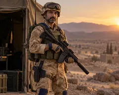
کاوه (قهرمان)
Elite commando: confident, few words, quiet and firm.
کماندوی نخبه؛ با اعتمادبهنفس، کمحرف، آرام و محکم
کار سختی داری؟
11 lines · ۱۱ جملهLines · جملهها
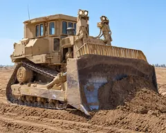
بولدوزر ساختوساز
Builder in the Construction Jihad spirit: practical, relaxed.
سازنده با روحیهی جهاد سازندگی؛ اهل عمل، راحت
بسمالله، شروع میکنیم.
10 lines · ۱۰ جملهLines · جملهها
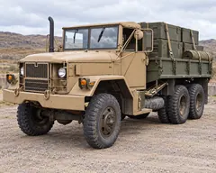
کامیون تدارکات
Driver: friendly working man.
راننده؛ خونگرم، اهل کار
خدا قوت!
8 lines · ۸ جملهLines · جملهها
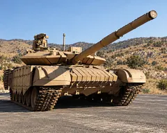
تانک کرار
Tank commander on the radio: confident, crisp.
فرمانده تانک پشت بیسیم؛ مطمئن، کوتاه و محکم
کرّارِ غیرِ فرّار!
8 lines · ۸ جملهLines · جملهها
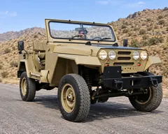
جیپ سفیر
Scout driver: fast, cheeky.
رانندهی شناسایی؛ سریع، شیطون
کجا سرک بکشیم؟
8 lines · ۸ جملهLines · جملهها
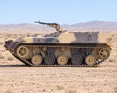
نفربر براق
APC commander: steady, gives orders to passengers.
فرمانده نفربر؛ آرام، به سرنشینها دستور میدهد
همه پیاده شید، یا علی!
7 lines · ۷ جملهLines · جملهها
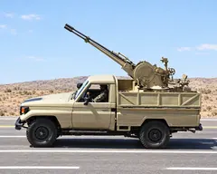
وانت ضدهوایی ZU-23
AA gun crew: loud, busy.
خدمهی توپ ضدهوایی؛ پرسروصدا و پرجنبوجوش
هر چی پرید، میزنیم!
7 lines · ۷ جملهLines · جملهها
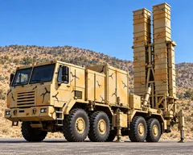
سامانهی باور-۳۷۳
Radar operator: technical, calm, formal radio Persian.
اپراتور رادار؛ فنی، آرام، دقیق؛ لحن رسمی و شمردهی بیسیمی
قرارگاه، باور؛ به گوشم.
5 lines · ۵ جملهLines · جملهها
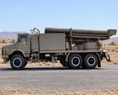
راکتانداز فجر-۵
Rocket artillery crew: powerful, commanding.
خدمهی توپخانهی راکتی؛ قدرتمند، فرماندهنده
راکتها شلیک شدن!
8 lines · ۸ جملهLines · جملهها
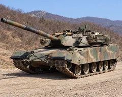
تانک سنگین ذوالفقار
Heavy tank commander: deep, slow, commanding.
فرمانده تانک سنگین؛ صدای بم، آرام، فرماندهنده
تانک سنگین در خدمت شما.
7 lines · ۷ جملهLines · جملهها
Help bring the next alpha to more Zero Hour players.
Generals Hypersonic is free and made by one developer, MxAlmousawi. You can support the development and testing of the next alpha.
Donations are not open yet. The donation link will appear here.
Donations support the developer's time and the costs of making and testing the mod: development, testing and tools.
Donations are optional, unlock nothing in the game and do not buy tester access.
You can also help by telling other Zero Hour players about the mod and reporting the bugs you find.